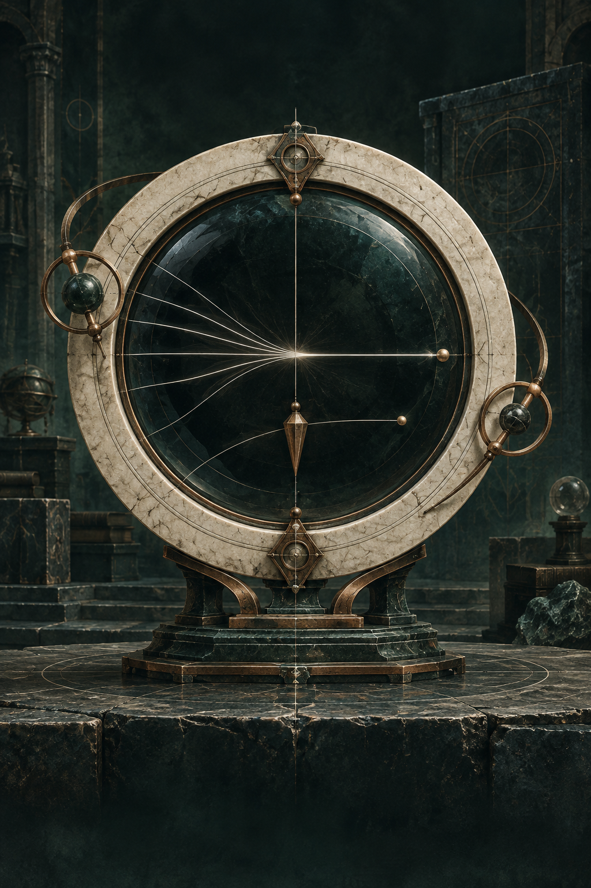

CMETHOD / 014

ARCHIVE EDITIONSCM
依赖镜头
让资料显露：它依赖了什么，又能支撑什么。
方法卡普通纸面
SCENE 01 · KNOWLEDGE VAULT
让资料沉淀为可追溯、可判断、可复用的方法。
按任务选用，不是强制三步：先保住可追溯的原始线索。

让资料显露：它依赖了什么，又能支撑什么。
移动指针观察视角 · 点击翻面
CURRENT METHOD
依赖会改变结论时，重开来源、区分独立证据；无关时保持安静。
尚未加入本次卡组。
MATERIAL COMPARISON
THIS SESSION
当前还没有可执行的方法组合。